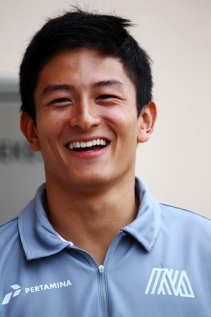

Formula 1
Rio Haryanto mengaku mendapatkan banyak pelajaran dari balapan GP Bahrain. Rio berharap balapan berikutnya di China akan berjalan lebih baik lagi baginya.
Rio berhasil mencapai garis finis dalam balapan keduanya di arena Formula 1. Pebalap Manor Racing itu menuntaskan lomba di Sirkuit Sakhir, Bahrain, Minggu (3/4/2016), di posisi ke-17.
Ini adalah finis pertama Rio dalam kariernya di F1. Dia sebelumnya tak mampu menyelesaikan lomba GP Australia karena mobilnya bermasalah."Saya telah berhasil finis di round dua di Bahrain, 57 lap. Tadi menantang sekali di awal race. Saya mendapatkan pace yang bagus, tetapi ada sedikit kendala dengan degradasi ban," ujar Rio seusai lomba.
"Saya harus melakukan strategi yang berbeda dan strateginya kurang perfect bagi saya tadi," imbuhnya.
Seri F1 selanjutnya akan dilangsungkan di Sirkuit Internasional Shanghai, China, pada 17 April mendatang. Salah satu tantangan terbesar Rio adalah mendapatkan hasil yang lebih baik daripada rekan setimnya, Pascal Wehrlein.
Dalam dua seri pertama, Wehrlein selalu mendapat hasil yang lebih baik daripada Rio meskipun kedua pebalap sama-sama belum mendapatkan poin. Wehrlein finis ke-16 di Australia dan ke-13 di Bahrain.
"Banyak sekali yang saya pelajari hari ini di race tadi. Mudah-mudahan di Shanghai nanti akan lebih baik lagi," kata Rio.
(source:detik.sport.com)